← Back to projects
PT Timah Industri · Cilegon
Water Treatment Plant PLC & HMI Automation
PLC/HMI-based monitoring and control system for an industrial Water Treatment Plant at PT Timah Industri, integrating pH and TDS instrumentation, automated chemical dosing, circulation control, and hardwired tank-refill logic.
System overviewAutomation project
Problem & System Development
From manual treatment to coordinated control.
Operation was substantially manual, pH adjustment relied on soda ash, and process visibility was limited. The project added pH/TDS instrumentation, circulation, dosing, and coordinated PLC/HMI control.
- Background
- Manual WTP operation with chemical adjustment for boiler-feed-water pH.
- Problem
- Limited monitoring and inconsistent, repetitive process handling.
- Result
- Added circulation, instrumentation, PLC/HMI supervision, and more coordinated operation.
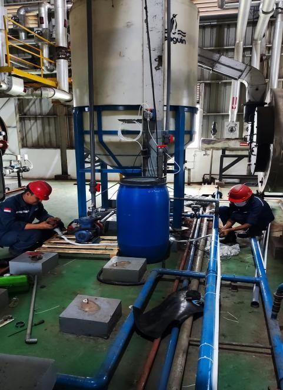
Before / After
Process Development
The modification extended the existing WTP with measurement, circulation, dosing, and refill subsystems.
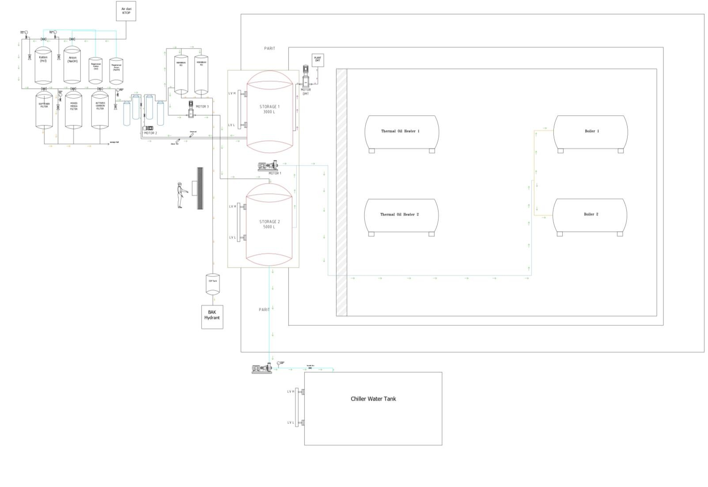
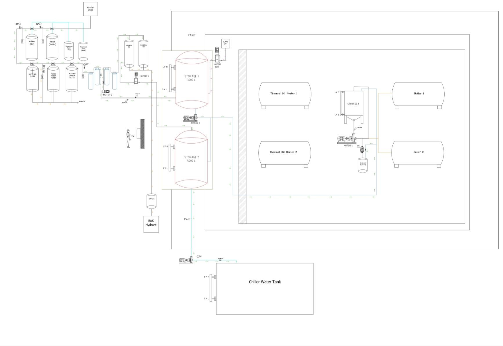
Before: existing WTP process and legacy pump/valve system. After: added pH/TDS measurement, circulation loop, soda-ash dosing, PLC/HMI integration, and an independent refill subsystem.
System Architecture & Control
Measurement, logic, and process actuation.
- Measurement
- GWQ pH and Supmea TDS controllers communicate with the LP-A070 through RS485 / Modbus RTU. pH is mapped into D00100; the recovered TDS destination register is not known.
- PLC/HMI
- Autonics LP-A070 integrates communication, internal process states, HMI monitoring, Pump 4 control, and pH-based dosing logic.
- Process control
- Pump 4 circulates treated water for mixing. Dosing is generated from the pH PV/setpoint comparison. TDS remains monitoring-only.
- Refill
- Low/high float switches operate the refill solenoid through independent hardwired relay logic, although the relay hardware is located in the auxiliary control-panel enclosure.
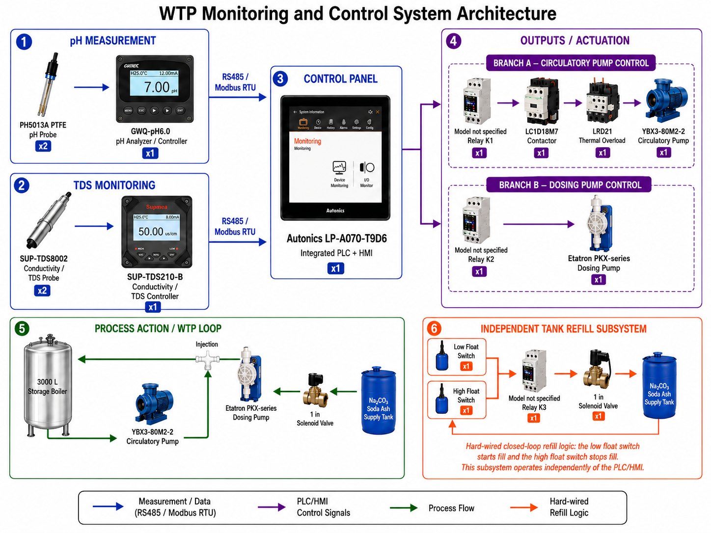
PLC Logic & HMI
Control logic and operator interface.
Physical X inputs and manual M_Man_Sns overrides are combined into normalized M_Sns internal states.
X_Sns_n OR M_Man_Sns_n → M_Sns_nNormalized process states generate the internal motor and valve commands used by the control program. M_Sns_2 coordinates Motor 1, Motor 2, and SV2 as one process group, while M_Sns_3 commands Motor 3.
Pump 4 uses HMI start/stop commands to latch M_Mtr_4. The retained run state passes through the TOR_4 overload permissive before the physical Pompa_On output is energized.
Start / Stop → M_Mtr_4 → TOR_4 → Pompa_OnThe GWQ pH process value is transferred through RS485 / Modbus RTU into D00100, while D00101 stores the pH setpoint. The comparison generates M000022 Dosing_Pump; the automatic dosing path is then qualified through the SV4 state and operator dosing-stop command before Y_Dosing is energized.
D00100 ≤ D00101 → Dosing_Pump → M_Sv_4 → Y_DosingPLC tag map
| Tag / area | Type | Function |
|---|---|---|
| Sns_1…4 | X | Physical process inputs |
| M_Man_Sns_1…4 | M | HMI/manual input overrides |
| M_Sns_1…4 | M | Normalized process states |
| M_Mtr_1…4 | M | Internal motor commands/states |
| M_Sv_1, M_Sv_2, M_Sv_4 | M | Internal valve / control-mode states |
| D00100 | D | pH process value |
| D00101 | D | pH setpoint |
| TOR_4 | X | Pump-4 overload permissive |
| Y_Mtr_* / Y_Sv_* | Y | Physical actuator outputs |
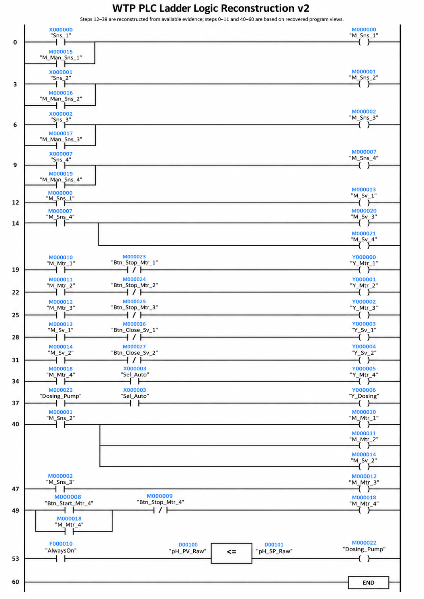
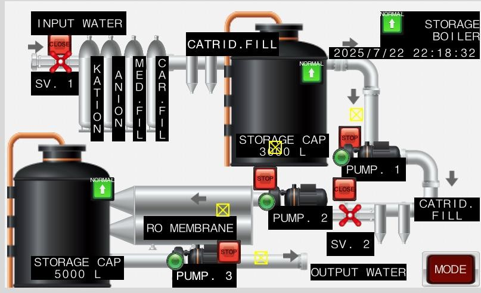
Process overview
Process-status overview with operator controls for the existing WTP stages and coordinated equipment states.
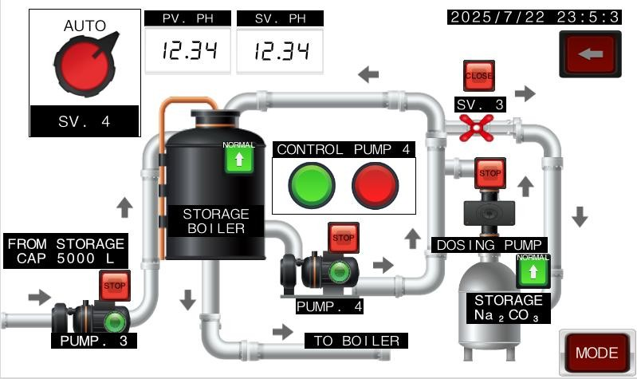
pH control
Operator interface for pH PV/SV, circulation control, automatic dosing, and dosing-pump status.
Auxiliary control panel
Electrical Wiring & Control
The added auxiliary panel supports the circulation, dosing, and refill subsystems while interfacing with the existing WTP installation. Pump 4 uses a three-phase contactor/overload branch, while dosing and refill use auxiliary relay switching.
- 380 V three-phase Pump 4 circulation branch
- 3-pole MCB, Schneider LC1D18M7 contactor, and thermal overload relay
- Plug-in control relays, terminal blocks, and a separate auxiliary single-pole breaker
- Independent hardwired float-switch/refill relay logic
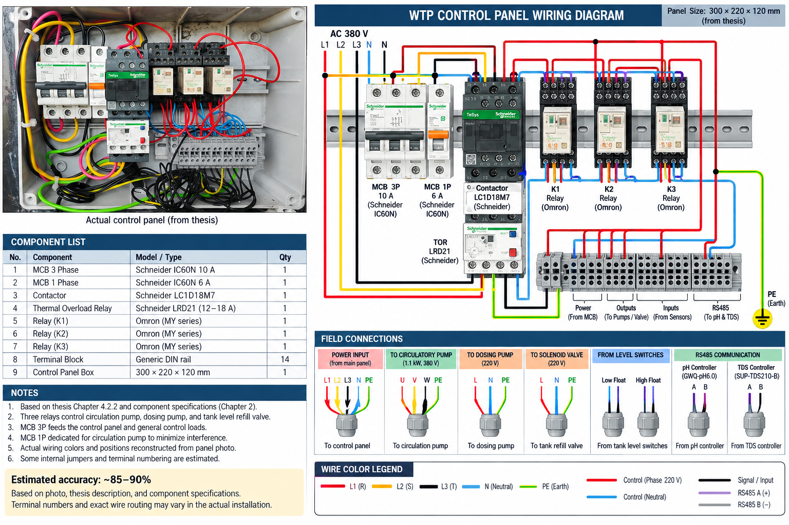
Testing & Results
Reported pH dosing response.
Reducing the dosing-pump setting substantially increased the time required for pH adjustment.
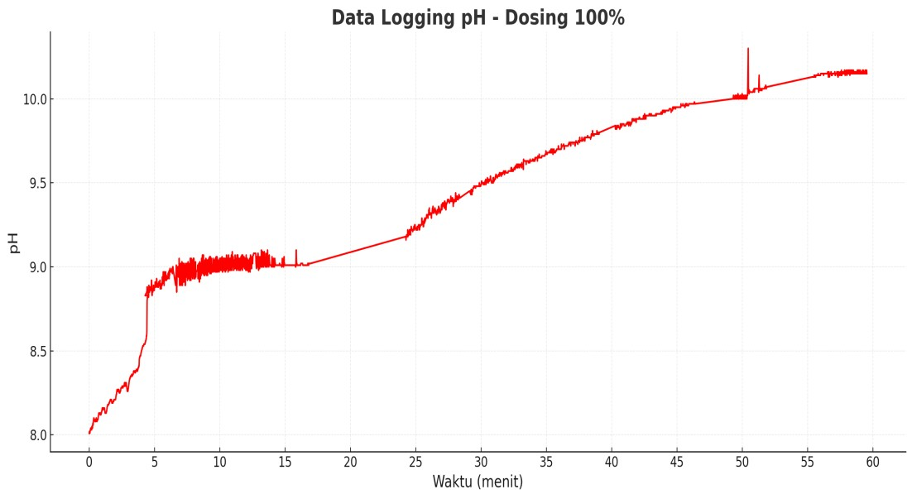
100% dosing
pH increased from approximately 8.00 to 10.00 in 59 min 32 sec.
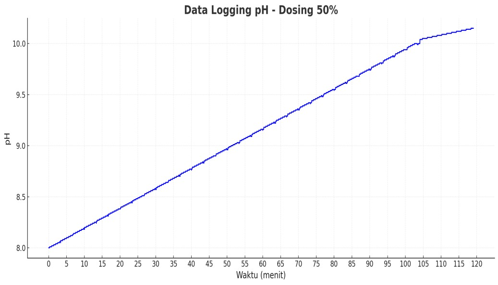
50% dosing
The lower dosing setting required 1 h 59 min 02 sec for the reported response.
Documentation
Documentation
Photographs and original software views from the project.
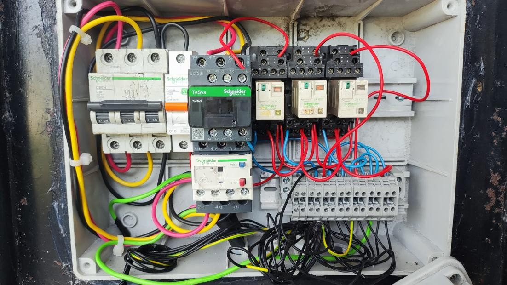
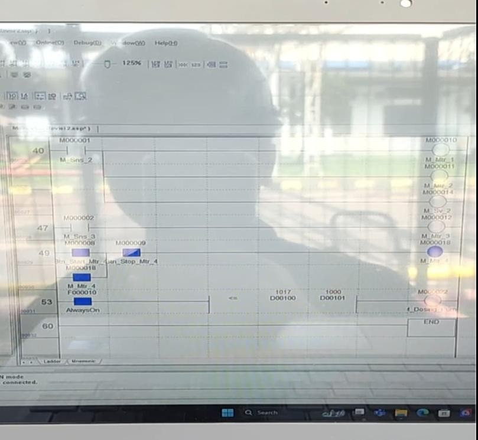
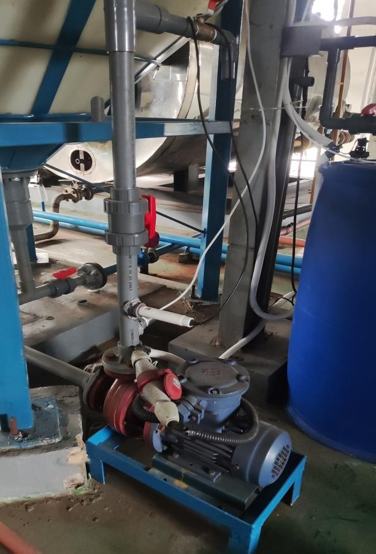
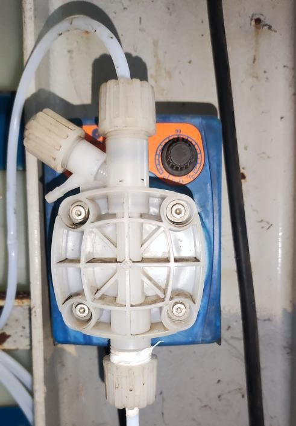
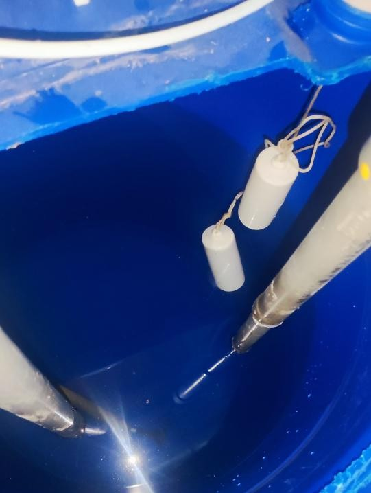
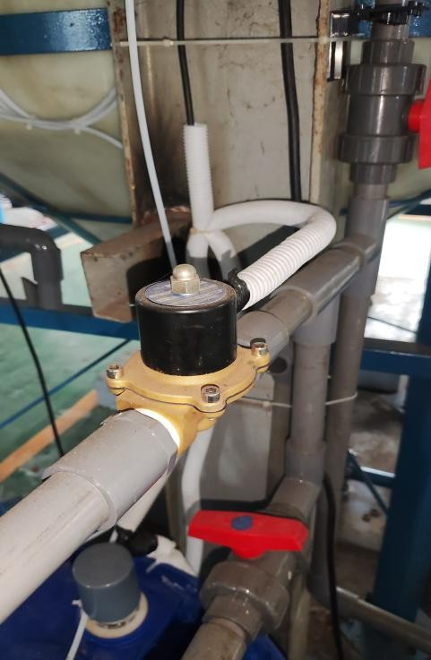
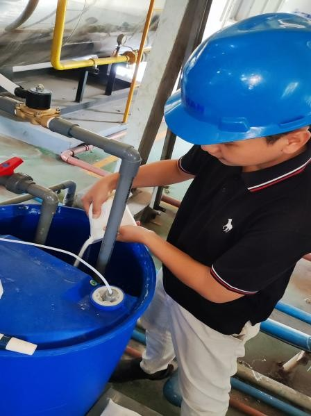
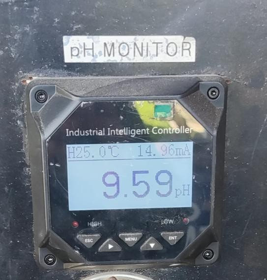
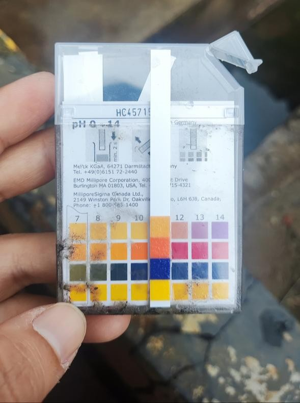